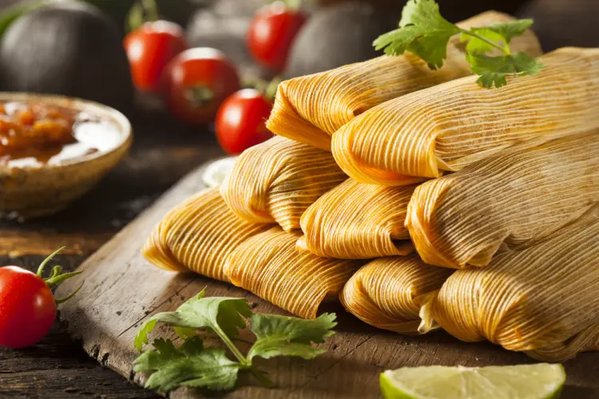

Tamales

Tamales my wife grew up with. Its a long process to make, so make sure you do it on a day you have plenty of time.
Ingredients
- 4 1/2 - 5 cups of water
- 4lbs of boneless chuck roast beef
- 1 small onion
- 4-5 garlic cloves
- 2tsp salt
- 1 dried bay leaf
- 8 dried guajillo chiles (stems/seeds removed)
- 2 dried new mexico chiles (stems/seeds removed)
- 2 dried california chiles (stems/seeds removed)
- 2 garlic cloves
- 4 cups maseca (instant corn flour)
- 2 1/2 tsp baking powder
- 1 1/4 cup lard or shortening
- salt to taste
- 2 tbsp oil
- 35-40 corn husks